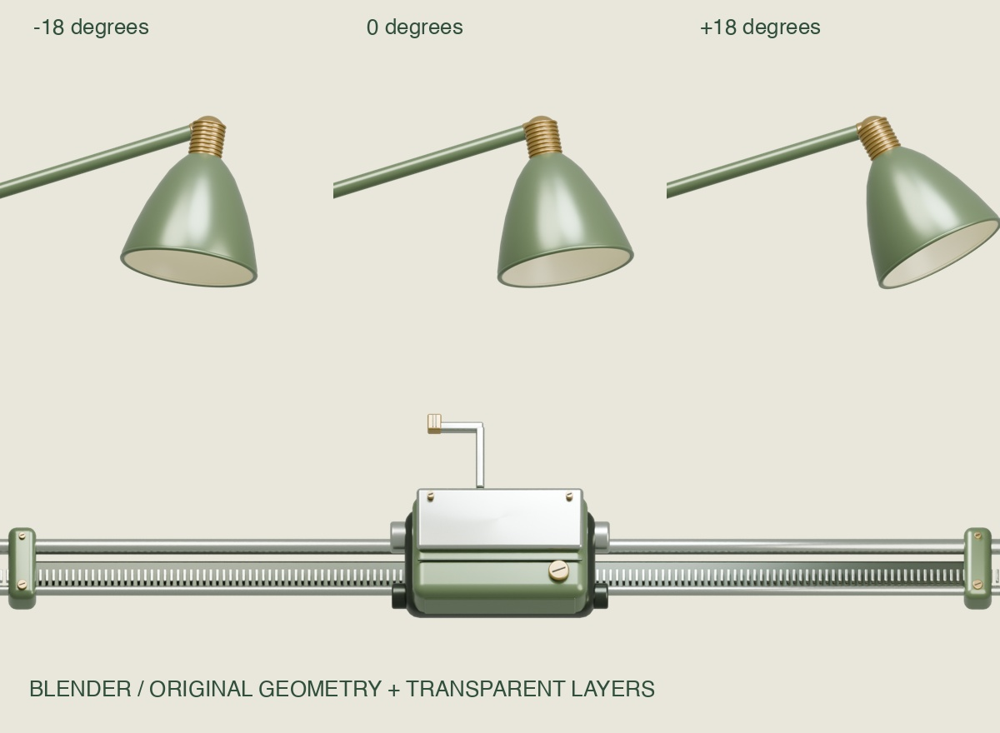
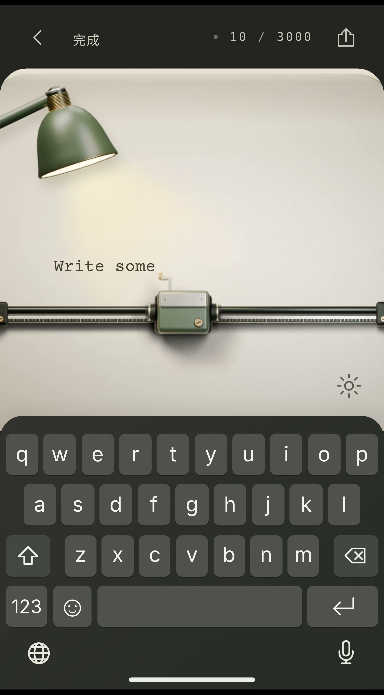
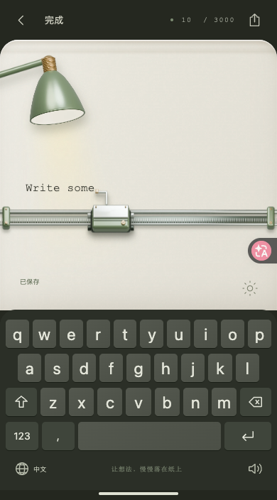

01
PAPER ROOM / MAKING OF
从视频里的细节，
做到可以写字。
按 7 项任务推进，复用已有参考与有效代码，补齐 Blender 模型、分层渲染和真实交互。这里可以查看每项做了什么，以及与原视频还有哪些差异。
07任务逐项归档
17透明机械渲染素材
02可编辑 Blender 工程
01 / TASKS & DELIVERABLES
清单上的每一步
02
锁定 UI 参考图与构图
按“能复用就复用”的要求，直接采用视频的编辑态和阅读态高清原帧。锁定纸面、台灯、导轨、滑块和键盘的比例。
复用原始参考03
准备 Blender 并搭建场景模型
安装并校验官方 Blender 4.5.14 LTS，通过项目本地 MCP stdio 桥接调用后台 Blender。原创搭建导轨、齿条、滑块、字头、灯臂和灯罩。
原创几何 · 可编辑04
制作材质与分层渲染素材
使用 Cycles 制作鼠尾草绿烤漆、金属、黄铜和纸面。导出导轨、滑块、灯臂，以及七档角度各自开关灯的灯头图层。
17 张透明 PNGWebP 网页资产05
实现输入、键盘与机械联动
复用键盘、音效、保存与导出逻辑。改用可选择的真实文本输入，机械滑块跟随光标，换行回到行首。
中文组合输入自动保存与导出06
实现灯头跟随与连续光照
灯臂固定，灯头绕连接枢轴缓动；依据真实灯口坐标画出向纸面衰减的暖光。开关灯同时改变灯罩内壁和纸面光照。
固定机位多角度素材独立灯头转轴07
对照视频调校与设备验收
对照原片编辑态和阅读态，并检查输入、中文组合、机械与灯光、保存、导出及三种视口。已完成技术检查，最终视觉保留给用户评价。
技术验收已执行视觉待用户反馈02 / REAL BLENDER ASSETS
模型与素材有独立交付

网页使用独立透明素材与真实文本层。材质板为制作过程图，最终页面另外补强了灯口暖白发光。原始 PNG、局部模型和最终合成 .blend 均在 Goal First OPS 对应任务中归档；仓库提供可重新生成模型的建模与渲染脚本。
03 / SIDE BY SIDE
与原视频放在一起看


已重做的部分：真实材质与几何厚度、独立转动灯头、连续纸面光照、可编辑文字。仍有差异：模型比例、灯罩高光、纸张卷边和字体与原片并非逐像素相同；原作者工程和参数未公开。右图中的粉色浮层来自浏览器扩展，不属于页面。
04 / WHAT WAS CHECKED
验证范围写清楚
已实际检查
- 英文与换行，中文组合输入一次提交。
- 模拟按键与退格，复合表情整体删除。
- 光标左右移动带动滑块和灯头，灯臂保持固定。
- 开关灯不夺走输入焦点，完成按钮收起键盘。
- 自动保存、刷新恢复与 UTF-8 文字导出。
- 3000 字上限，以及换纸确认框取消后保留文字。
- 390×844、320×568 手机尺寸与 1440×1000 桌面布局。
- 重新打开最终 Blender 工程，读取 213 个对象与灯头层级。
当前边界
- 手机尺寸检查使用浏览器仿真，未完成 iOS / Android 实机验收。
- 中文组合通过浏览器接口验证，不覆盖所有系统输入法与候选窗口。
- 音效代码复用，未通过外部音频设备核听。
- 已有技术结果不替代用户对最终视觉的认可。
- 此版本通过 Cloudflare 长期托管；草稿仍保存在当前浏览器中。